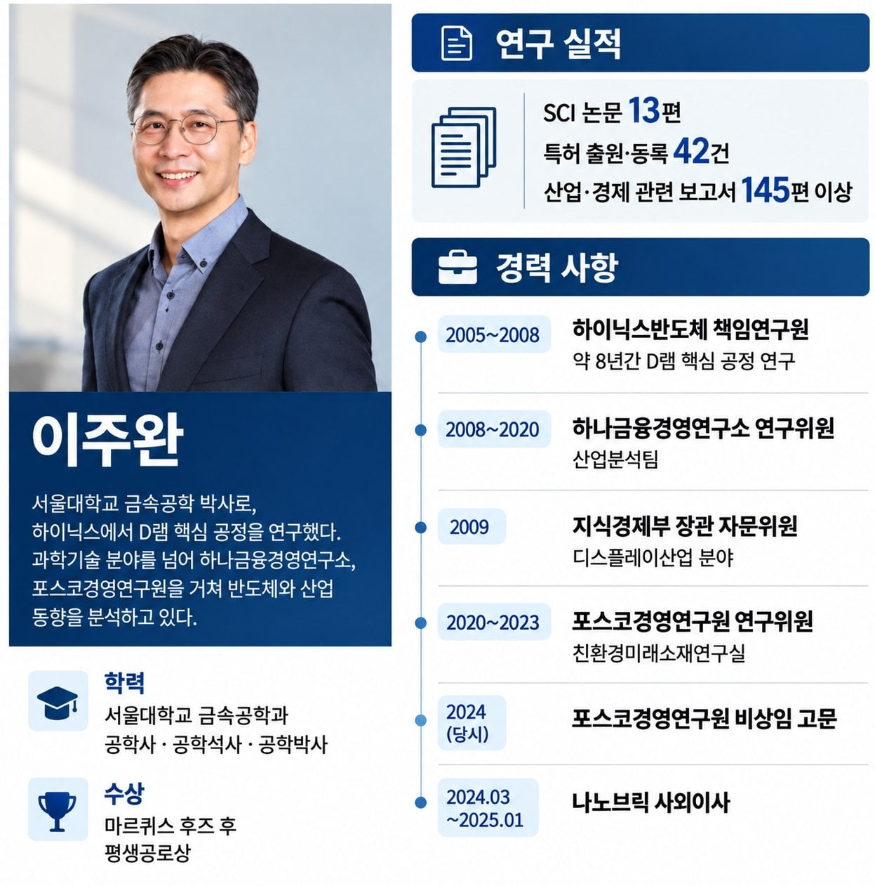

삼전닉스 목표가 박사스펙
댓글
삼전 7만원때 25만원갈거라고 맞췄으면 인정
다른 댓글보니까 삼전 10만원 돌파했을때부터 하락온다고 했다던데
나노브릭에서 사외이사라니 신기하네
나노브릭은 반도체랑 무관한데
스펙이야 뭐 훌룡하겠지만 틀린적이 없다?? ㅋㅋㅋㅋㅋ 그건 개소리지
여의도든 월가든 틀리지않는 전문가가 어디있겠음
드러켄밀러도 안 할 소릴 당당하게 ㅋㅋ
오만한거지.
주식을 본인이 맞출수 있다고?
10년동안 맞췄다고?
그럼 계좌까봐
돈없다고 형광등 빼던시절에 회사다니긴했누 ㅋㅋ
천재, 학위, 금리, PBR, PER
국장은 이딴거 상관없어
언럭키 마이클베리냐 ㅋㅋㅋㅋㅋㅋㅋㅋㅋㅋ
전형적인 권위에 호소하는 오류
그런데 지금 상황 웃기긴함 삼전 하닉 주가 상태가 진짜 문제가 없고 사람들이 불안한게 없으면 그냥 개소리로 넘기고 신경도 안쓸건데 주가 박살나고 물린 사람 개 많은지 이 사람 관련 글 겁나 많이 올라옴 ㅋㅋㅋㅋㅋㅋㅋㅋ
서울대 할배가 와도 당연히 맞출지는 모르는거지만
그래도 생각하는 논리랑 근거가 있는건데
무지성 AI 슈퍼사이클 영익이 얼만데 무슨 개소리냐는 주린이가 많은게 심각한 오류 ㅋㅋㅋ
근데 재무상태 대비 주가가 저평가인 종목이 한두개가 아니고 그게 단기간 유지된것도 아닌데 영익 하나만 보고 주가가 오를거라고 생각하는거도 좀... 너무 밸류트랩에 갇혀있는거 아닌가 싶네 사람들이
저사람이 아무리 잘안다고해서 미래를 아는건 아니지
본인이 생각하는만큼 본인 사상대로 예측하는거라
걍 똑똑한 비관론자일뿐임
미래는 알수없고 확실한건
ai가 더더욱 많이 퍼지고는 있음
예상지표로는
ai때문에 반도체가 더 활용될거라는 점..
근데 그건 불확실한거지
미래는 알수없으니까, 예측은 하는거지
근데 증권가에서 목표가까지 제시할 사람이면 스펙 안나쁜 사람이 있을려나ㅋㅋ
개붕이들 이때다 싶어서 탑골공원 바둑 훈수 두기 열심히하네
"그럼 숏쳐" 4글자로 반박이 됨
개별 주가가 얼마네 얼마네 하는 애들이 하는 말은 걍 무시 하는게 답임 그런건 개인이 맞출 수 있는게 아님 겨우 그 정도로 주가를 맞출 수 있으면 이미 AI 돌려서 주식 분석하고 다들 떼 돈 벌고 있지 ㅉㅉ
경력사항에 아집도 써넣어줘.
증권가 전문가들 다 스펙 대단한데 얼마나 예상을 맞췄나 하면 ㅋㅋㅋ
이 업계에서 설박이 몇명인데 저 사람 의견을 유독 더 믿어야하는 이유가 무엇인지요